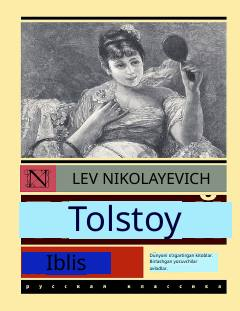

ILev Tolstoyning inson ruhiyati va axloqiy kurashlar haqidagi sara asarlari to'plami.
Ushbu to'plam Lev Tolstoyning turli yillarda yozilgan, inson qalbidagi yaxshilik va yomonlik kurashini aks ettiruvchi asarlarini o'z ichiga oladi. Kitobdan 'Iblis', 'Aqldan ozgan odamning eslatmalari', 'Zulmat kuchi' va 'Tirik jasad' kabi mashhur asarlar o'rin olgan.